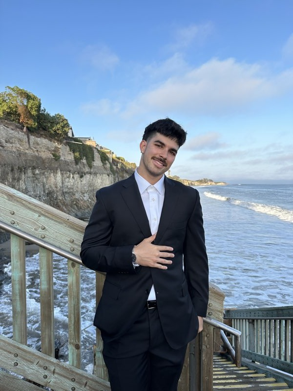
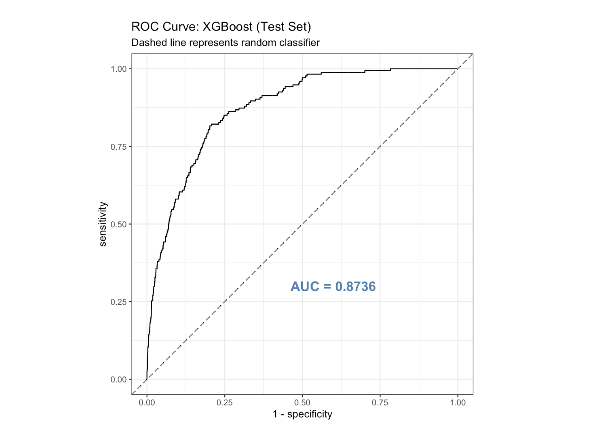
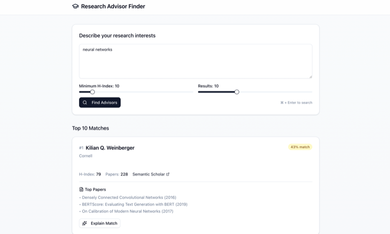
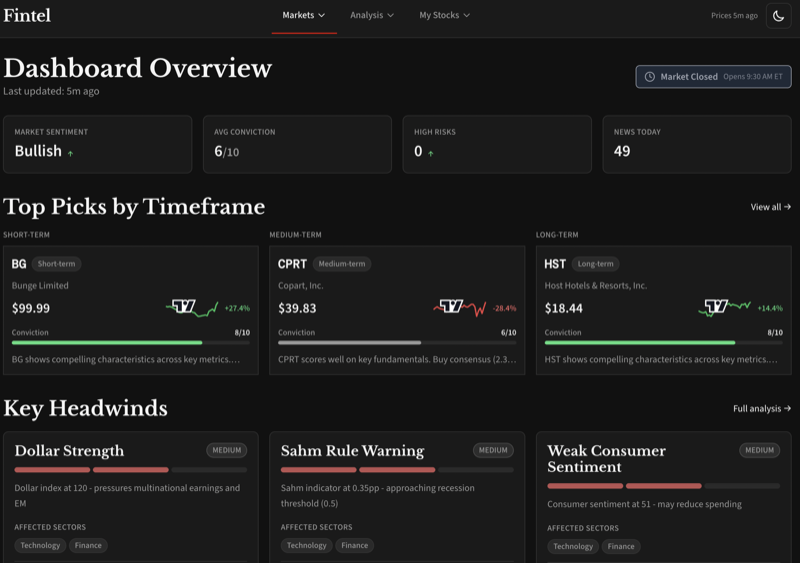
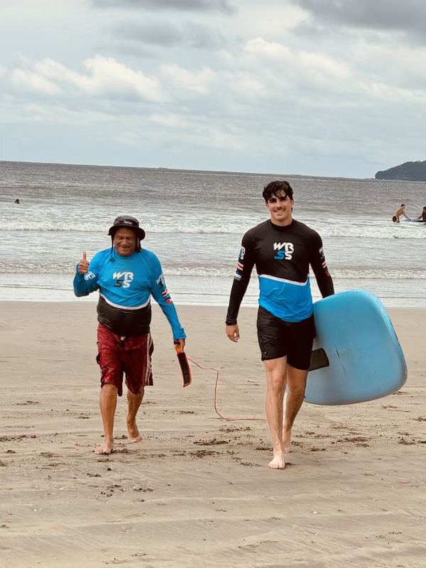
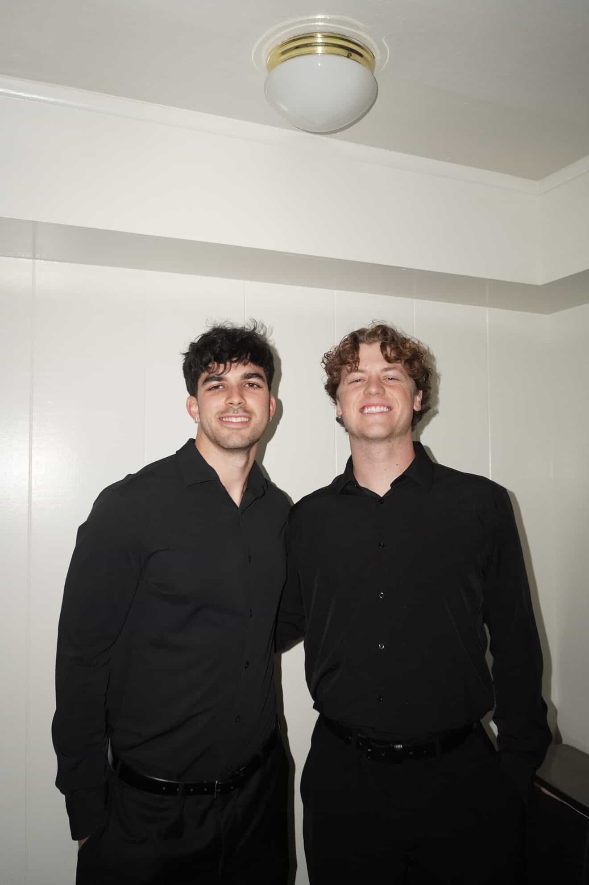
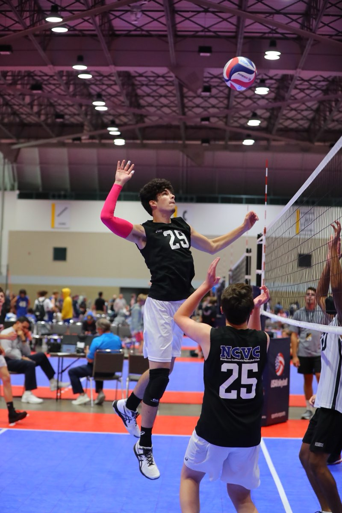
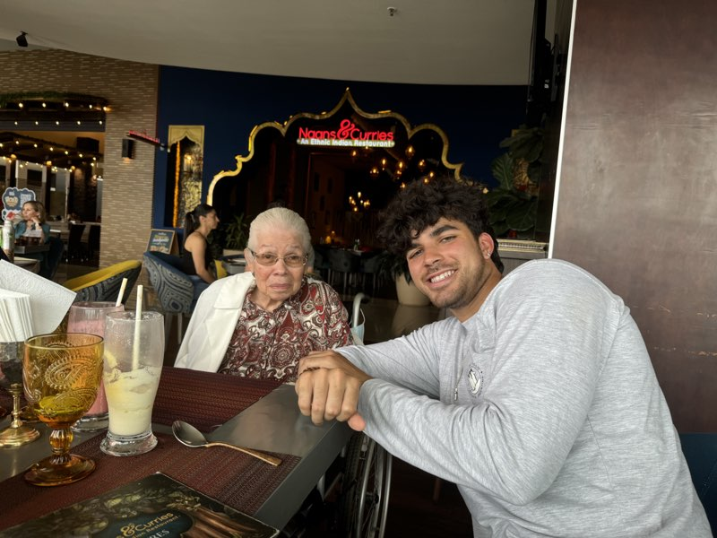

Statistics & Data Science · University of California, Santa Barbara
Research Interests: Sequential statistical inference, risk management, multi-agent AI system reliability, and biostatistical methods for clinical trial design.
Download CV
I'm a third-year Statistics & Data Science and Economics student at UC Santa Barbara. My research sits at the intersection of sequential inference, e-value theory, and reliable AI. I'm drawn to problems where you need to prove something works, not just show that it does.
Right now I work with Prof. Annie Qu on formal guarantees for multi-agent LLM systems. Previously I studied Alzheimer's biomarkers at the UC Irvine Summer Institute for Biostatistics with Prof. Dan Gillen. I also build data systems at Alida Inc.
Outside of research I play piano, DJ, lift weights, and think too much about patterns in things.
Compositional Coordination Confidence for Multi-Agent LLM Systems
Formulating the first formal definition of provable task-completion confidence for multi-agent LLM pipelines. Using e-value composition across DAG topologies with anytime-valid guarantees, validated over 1,642 annotated traces across 7 frameworks. Awarded SIOP Summer Research Scholarship (2026) by UCSB Office of Education Partnerships.
Alzheimer's Biomarker Analysis and Sample Size Optimization
Constructed GLM, ridge, and CART classifiers identifying Alzheimer's progression biomarkers (pTau217, PACC, ADL) across 1,150+ A4 trial participants (0.835 AUC). Developed sample size reduction framework achieving 80% power with 188 vs. 500+ participants.
Data Engineering Intern · Sept 2024 – Present
Built a multi-mode AI data exploration platform over 47 healthcare datasets with multi-agent routing, graph analysis, persistent conversation memory, and automated SQL generation in Databricks.
Python · Databricks · LangChain · Neo4J · Claude API
Applied GenAI SWE Intern · Feb 2026 – May 2026
Leading collaborative AI product development between student teams and industry partners. Running a 12 week sprint building an automated Call Triage System from scratch.
LangGraph · Python · Team Leadership

PSTAT 231 Final Project • UC Santa Barbara • March 2026
Predicting catastrophic out-of-pocket healthcare burden on 20,962 MEPS respondents; XGBoost achieved test ROC-AUC 0.874 with SHAP-identified poverty threshold as the dominant driver.
R • tidymodels • XGBoost • BART • SHAP • MEPS


Personal Project · 2025
Stock analysis platform with a 6-factor scoring system grounded in academic research (Jegadeesh-Titman, Novy-Marx, Fama-French), pulling from 11 data sources and tracking 22+ macro indicators.
Python · Astro · React · TailwindCSS · SQLite




Santa Barbara, CA · UC Santa Barbara